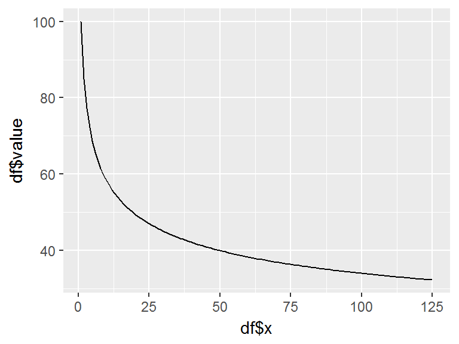
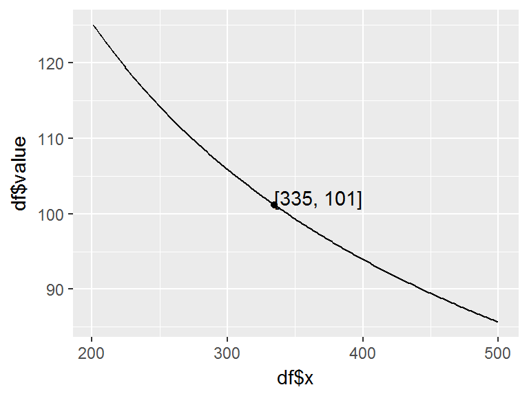
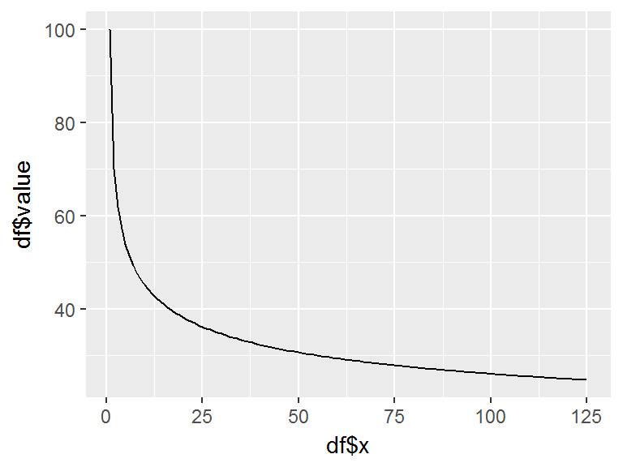
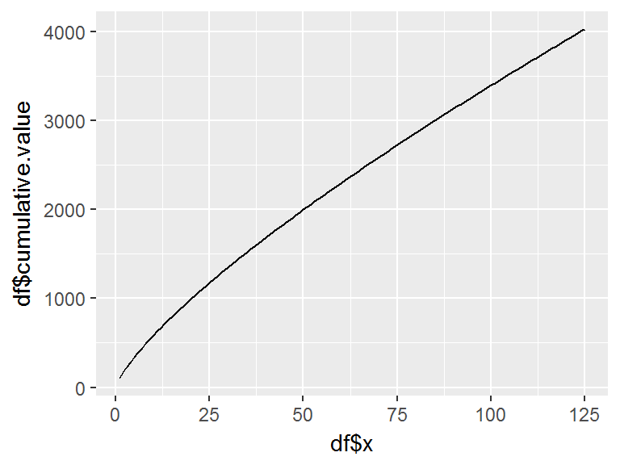
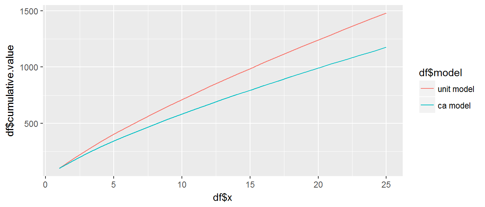
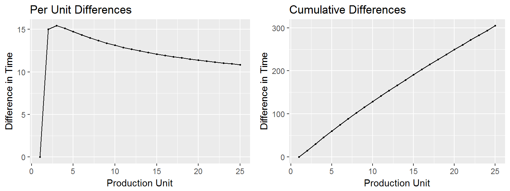
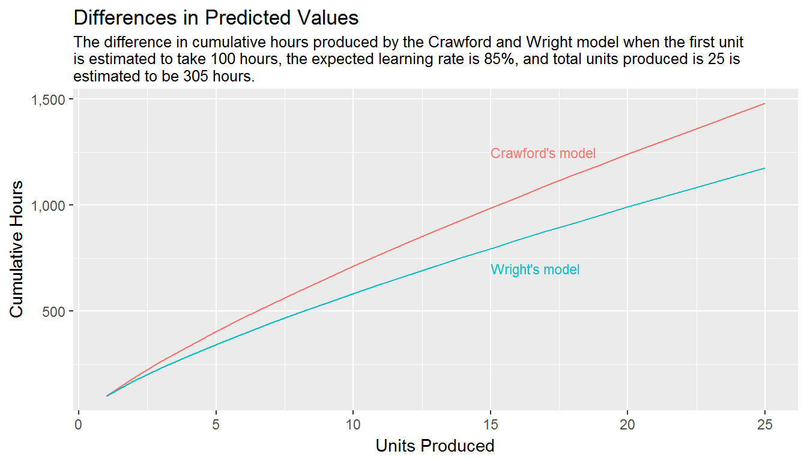

Learning curves are steep in history and have several alternate names such as improvement curves (Fauber, 1989), efficiency curves (Bjorn, 1998), experience curves (Desroches, Garbesi, Kantner, Buskirk, & Yang, 2013), progress curves (Dutton & Thomas, 1984) and cost improvement curves (Miller et al., 2012). The “learning effect” was first noted by T.P. Wright in the 1920s in connection with aircraft production (Wright, 1936). Its use was amplified by experience in connection with aircraft production in World War II. Initially, it was thought to be solely due to the learning of the workers as they repeated their tasks. Later, it was observed that other factors probably entered in, such as improved tools and working conditions, and various management initiatives. Regardless of the exact, or more likely combined, phenomenon we can group these factors together under the general heading of “learning.”
The underlying notion behind learning curves is that when people individually or collectively repeat an activity, there tends to be a gain in efficiency. Generally, this takes the form of a decrease in the time needed to do the activity. Because cost is generally related to time or labor hours consumed, learning curves are very important in industrial cost analysis. A key idea underlying the theory is that every time the production quantity doubles, we can expect a more or less fixed percentage decrease in the effort required to build a single unit (the Crawford theory), or in the average time required to build a group of units (the Wright theory). These decreases occur not in big jumps, but more or less smoothly as production continues.
Mathematical models are used to represent learning curves by computing the efficiencies gained when an activity is repeated. Today, there are many learning curve models, some of which will be discussed in the next section. The process of capturing or predicting learning curves to assess their influence on future production has been used for many years within the DoD and across industry; in fact, Goldberg & Touw argue that learning curve models are the “most important models in military and industrial cost analysis†(2003 p. 1). However, guidance provided to analysts on implementation is limited. Historically, analysts have had to rely on pre-computed tables (Boren & Campbell, 1970) or on their own abilities to create and implement the learning curve functionality (AFCAH, 2008). As previously mentioned, this can result in several deficiencies such as inconsistent and invalid implementation. Thus, although learning curves are a foundational mathematical technique in cost analyses the community lacks an organized construct to distribute, compute, and execute learning curves. This suggests that learning curves represent a valid starting point for establishing an R package; for it yields two utilities: 1) establishes an organized vehicle to distribute and perform learning curve calculations and 2) illustrates the efficacy of open source capabilities for the cost analysis community.
Several learning curve models have been proposed; however, two models represent the most widespread use – Wright’s cumulative average model and Crawford’s single unit model. The underlying notion behind the theory of these two models is that every time the production quantity doubles, we can expect an approximate fixed percentage decrease in the effort required to produce a single unit (Crawford’s theory), or in the average time required to build a group of units (Wright’s theory).
Both Wright’s and Crawford’s model can be expressed as:
\[y_n=ax^b \tag{1}\]
where \(a\) represents the time (or cost) to produce the first unit, \(x\) represents the cumulative number of units produced and \(b\) the natural slope of the learning curve where \(b = log(s)â„log(2)\). The primary difference lies in \(y_n\), which for Wright’s model represents the cumulative average time (or cost) required for the first \(n\) units and for Crawford’s model represents the time (or cost) required for the \(n^{th}\) unit of production.
The natural slope (\(b\)) reflects whether learning proceeds rapidly or slowly but is not always intuitive. Consequently, the natural slope can be expressed as a percent between 0-100% through algebraic conversion of \(b\) to obtain \(s = 10^{b*log(2)+2}\) which is equivalent to \(s = 2^b\). When expressed as the percent slope (\(s\)) we can state that every time production quantity is doubled, the time (or cost) are reduced to s percent of what they were before the doubling.
We may not always have information regarding the first unit. Rather, we may only have time or cost information regarding the \(m\)th unit (\(y_m\)) where \(m<n\). Consequently, for the unit model, we can still compute the time required for the \(n\)th unit by recognizing the relationship \(y_n â„ y_m = n^b â„ m^b\) such that the following holds:
\[y_n=y_m \Big(\frac{n}{m}\Big)^b \tag{2}\]
Moreover, the ability to predict the total hours for a block of production is important. Thus the Eq. 3 represents the unit by unit summation where \(T_{m,n}\) is the total time (or cost) of production for unit \(m\) to unit \(n\), where \(m < n\).
\[ T_{m,n} = a[m^b+(m+1)^b+(m+2)^b+⋯+n^b ] \tag{3}\]
However, exact summation can be computationally slow when calculating for significantly large production blocks. Consequently, a formulaic approximation to the Eq. 3 can be written as:
\[T_{m,n} = \Big[\frac{a}{1+b}\Big]*\Big[(n+0.5)^{1+b}-(m-.05)^{1+b} \Big] \tag{4}\]
As an example of this approximation’s accuracy, when computing \(T_{m,n}\) for \(a=100\), \(m=1\), \(n=1,000,000\), and \(b=-0.2345\) (\(s=85%\)) the exact summation produces \(T_{m,n}=5,119,612\) and the approximation produces \(T_{m,n}=5,119,614\); a difference of only 2 units.
We can also obtain the hypothetical midpoint of a production block. Considering the number of units in a block is represented as \(Q=n-m+1\), thus leveraging our approximation Eq. 4, we can state that unit \(k\) represents the average time (or cost) per unit in this block such that \(T_{m,n}=y_k * Q\). We also know that \(y_k=ak^b\); therefore, \(T_{m,n}=ak^b Q\). Hence, since \(k=(T_{m,n}â„Qa)^{1/b}\) we can substitute Eq. 3 for \(T_{m,n}\) and yield the following:
\[k=\Bigg[\frac{(n+0.5)^{1+b}-(m-.05)^{1+b}}{(1+b)(n-m+1)}\Bigg]^{1/b} \tag{5}\]
With the cumulative average model, we can compute total hours (or cost) for a production block from unit 1 to unit \(n\) \(T_{1,n}\) with the following:
\[T_{1,n} = an^{1+b} \tag{6}\]
Furthermore, we can calculate total hours (or cost) for a production block from unit \(m\) to unit \(n\) \(T_{m,n}\) where \(m < n\) with:
\[T_{m,n} = T_{1,n}-T_{1,m-1} = a\big[n^{1+b} -(m-1)^{1+b} \big] \tag{7}\]
Consequently, we can use the previous equation to derive this next equation, which computes the hours or cost for a particular unit. Consider if \(n\) equals \(m+1\), the previous equation allows us to write \(y_n = a\big[n^{1+b}-(n-1)^{1+b}\big]\) and by analogy using the unit model, we can deduce Eq. 8:
\[y_n = y_m \Bigg[\frac{(n^{1+b}-(n-1)^{1+b}}{m^{1+b}-(m-1)^{1+b}}\Bigg] \tag{8}\]
While the unit and cumulative average models are both based on the underlying power law formula, they are quite different in the way they work. Different studies debate the merits and superiority of learning curve methods and additional studies indicate that each methodology provides distinct benefits (i.e. Jensen, 1991; Miller, Dowling, Youd, Unger, & White, 2012). The purpose here is not to advocate one or the other but, rather, to outline the fundamentals behind each one. It is also important to understand differences that exist in the predicted outputs between these models. Moreover, both unit and cumulative average models are sensitive to errors in \(b\). If one errs in the direction of setting \(s\), and therefore \(b\), too low the result will be an overrun in the time (or cost). If \(s\) is set too high then time (or cost) will be over-predicted. We can compute the approximate percent error in cumulative time (or cost) due to an incorrect choice of learning rate with Eq. 9 where \(e\) is the measure of error when the natural learning curve slope \(b_2\) is compared to slope \(b_1\):
\[e = n^{b_2-b_1 }-1 \tag{9}\]
In addition, it is common for large organizations to track learning rates by department. Learning rates typically differ in diverse operations. When these rates are individually tracked, it is possible for each department to have its own learning curve for a given product or process. Estimators then can create separate estimates for each department based on that department’s learning profile. However, some analysts (i.e. Contract negotiators) typically deal more with the “big picture.” If the customer wants to change the production quantity, or perhaps make certain other changes, these cost analysts may not have the time to revisit the learning for each department to predict changes in total time (or cost). Rather, they want an aggregated learning curve for the entire firm (across all production or service departments involved in the creation and delivery of the product or service) that is reasonably accurate at any production quantity of the product. Aggregated learning curves can also be useful when learning is applied to both labor and material. Consequently, a simple yet robust method for an aggregate learning curve follows. If we apply the following assumptions:
Then for the cumulative average model we can derive the approximate aggregate cumulative time (or cost) with:
\[T_{1,n}^{all} = a_{1,n}^{all}*n^B \tag{10}\]
where \(B\) is the composite learning slope which can be derived via Eq. 11:
\[B = \frac{log(T_{1,n}^{all} - log(a_{1,n}^{all})}{log(n)} \tag{11}\]
There are additional algorithms established for learning curve modeling but these represent the most commonly used functions that the authors have applied and witnessed others applying on a routine basis in their cost analysis work. Consequently, these functions provide a good starting point to construct an R package to distribute these algorithms in a means that makes computing and executing them more straightforward and consistent.
This section discusses how to use learningCurve to implement the algorithms previously outlined plus additional functionality. The learningCurve package currently contains the following functions:
| Function | Description |
|---|---|
unit_curve |
Uses Crawford’s unit learning curve theory to predict the time or cost of the nth unit given the time of the mth unit and the learning rate (\(s\)). Re: Equation 2 |
unit_cum_exact |
Uses Crawford’s unit learning curve theory to provide the exact cumulative time or cost required for units \(m\) through \(n\) (inclusive) with learning rate \(s\). Re: Equation 3 |
unit_cum_appx |
Provides the approximate cumulative time or cost required for units \(m\) through \(n\) (inclusive) using the Crawford unit model. Provides nearly the exact output as unit_cum_exact, usually only off by 1-2 units but reduces computational time drastically if trying to calculate cumulative hours (costs) for over a million units. Re: Equation 4 |
unit_midpoint |
Provides the so-called “midpoint” or average unit between units \(m\) and \(n\) (where \(n > m\)) based on Crawford’s unit learning curve model. Re: Equation 5 |
unit_block_summary |
Provides summary information for the block containing units \(m\) and \(n\) (where \(n > m\)) based on Crawford’s unit learning curve model. |
ca_unit |
Computes the time (or cost) required for a specific unit using Wright’s cumulative average model. Re: Equation 8 |
ca_block |
Computes cumulative time or cost for units \(m\) through \(n\) in a production block using Wright’s cumulative average model. Assumes the block begins at unit \(m\) and ends at unit \(n\). Re: Equation 7 |
delta |
Computes the difference between the unit or cumulative prediction estimates provided by the Crawford and Wright models. Thus, if unit level is selected will compute unit_curve - ca_unit; if cumulative level is selected will compute unit_cum_exact - ca_block
|
cum_error |
Computes approximate percent error in cumulative time (or cost) due to an incorrect choice of learning curve rate. Re: Equation 9 |
agg_curve |
Computes the approximate aggregate cumulative learning curve formula by calculating the sum of all contributing hours from all departments for all production units 1 through \(n\). Re: Equation 10 |
natural_slope |
Computes the natural slope rate for given learning rates. Re: \(b= log(s)/log(2)\) |
lc_rate |
Computes the learning rate for given natural slopes. Re: \(s=10^{b* log(2)+2}\) |
natural_slope_est |
Computes the natural slope based on total time (cost) to produce the first n units, time (cost) required for the first unit and total units produced. Re: \(b=\frac{log(T)-log(t)}{log(n)-1}\) where \(T\) is the total time (or cost) required to produce all \(n\) units, \(t\) is the time (or cost) required to produce the first unit, and \(n\) is the total number of units produced. |
lc_rate_est |
Computes the learning rate (\(s\)) of a production block when the total units produced, total time of block production, and the time for the first unit are known. First, \(b\) is calculated per the natural_slope_est function and then \(b\) is fed into the lc_rate function to calculate \(s\). |
plot_unit_curve |
A convenient plotting function that plots the learning curve for units \(m\) through \(n\) (inclusive). Allows user to choose between the Crawford and Wright model and also between a unit level plot or a cumulative level plot. |
plot_block_summary |
A convenient plotting function that plots the Crawford unit learning curve for the production block containing units \(m\) through \(n\) (inclusive) while highlighting the midpoint unit production number and the time (or cost) for that midpoint. |
plot_delta |
Plots the difference in time (or cost) per unit between Crawford’s unit model and Wright’s cumulative average model. Allows the user to plot the differences at the per unit time (or cost) level or at the cumulative time (or cost) level. |
To put these functions into action we load the learningCurve package along with the tidyverse package for basic data manipulation purposes:
library(learningCurve)
library(tidyverse)To use the unit_curve function we need to supply it with the following arguments:
So assume an analyst believes that the first unit of a product will require 100 labor hours and the organization has historically experienced an 85% learning curve on similar products. To estimate how many hours the 125th unit will require based on Crawford’s single unit model we apply unit_curve:
unit_curve(t = 100, m = 1, n = 125, r = .85)
## [1] 32.23647Moreover, since R functions are vectorized we can easily compute differences in estimated hours based on different learning rates:
rates <- c(.80, .825, .85, .875, .90)
unit_curve(t = 100, m = 1, n = 125, r = rates)
## [1] 21.13225 26.18401 32.23647 39.44942 48.00243Furthermore, if an analyst has a spreadsheet listing multiple products for which the nth unit time (or cost) needs to be predicted such as:
product_data
## # A tibble: 3 × 6
## Product `Learning Rate` `Unit M` `Unit M Time` `Unit N` `Unit N Time`
## <chr> <dbl> <dbl> <dbl> <dbl> <chr>
## 1 Product A 0.83 1 100 80 ?
## 2 Product B 0.92 20 120 150 ?
## 3 Product C 0.87 10 90 175 ?We can easily predict the time required for each product’s unit n
unit_curve(t = product_data$`Unit M Time`, n = product_data$`Unit N`,
m = product_data$`Unit M`, r = product_data$`Learning Rate`)
## [1] 30.79056 94.17084 50.64078We can also plot a Crawford learning curve from unit m to unit n with plot_unit_curve. This function defaults to plotting the Crawford unit model (argument model = “u”) at the unit rather than cumulative level (argument level = “u”).
plot_unit_curve(t = 100, m = 1, n = 125, r = .85, model = "u")
Alternatively, if the analyst wants to estimate the total time (or cost) required for all production units from m to n we can apply the unit_cum_exact function. Going back to our initial example, if an estimator believes the first unit of a product will require 100 hours and the organization has historically experienced an 85% learning curve, we can predict the cumulative time required for the first 125 units:
unit_cum_exact(t = 100, n = 125, r = .85)
## [1] 5201.085Alternatively, we can apply the unit_cum_appx function to compute the approximate cumulative total hours, which typically falls within 1% of the exact cumulative time produced by unit_cum_exact.
unit_cum_appx(t = 100, n = 125, r = .85)
## [1] 5202.988The primary difference between unit_cum_exact and unit_cum_appx is computational efficiency. We can illustrate by estimating the cumulative time needed for one million units. The difference between the estimated values is less than .001% but the computational time is reduced by over 90%.
# exact cumulative predicted value
unit_cum_exact(t = 100, n = 1000000, r = .85)
## [1] 5119612
# approximate cumulative predicted value
unit_cum_appx(t = 100, n = 1000000, r = .85)
## [1] 5119614
# computational time for exact cumulative prediction
system.time(unit_cum_exact(t = 100, n = 1000000, r = .85))
## user system elapsed
## 0.13 0.00 0.13
# computational time for approximate cumulative prediction
system.time(unit_cum_appx(t = 100, n = 1000000, r = .85))
## user system elapsed
## 0 0 0If we desire to plot the cumulative learning curve for Crawford’s unit model we can again apply the plot_unit_curve function and change the level argument to “c” to plot cumulative values:
plot_unit_curve(t = 100, m = 1, n = 125, r = .85, model = "u", level = "c")To obtain the hypothetical midpoint of a production block we leverage the unit_midpoint function. An analyst that needs to know the midpoint for a production block that runs from unit 201 to unit 500 inclusive with a projected learning curve of 75% can obtain this with:
unit_midpoint(m = 201, n = 500, r = .75)
## [1] 334.6103Moreover, the analyst can easily produce a summary for the production block such as total block units, total block hours, midpoint unit and midpoint hours with unit_block_summary. The arguments required include:
Thus, with our previous example, the analyst can obtain the block summary for units 201 to 500 inclusive with a projected learning curve of 75% and an estimate time of 125 hours for the mth unit with:
unit_block_summary(t = 125, m = 201, n = 500, r = .75)
## $`block units`
## [1] 300
##
## $`block hours`
## [1] 30350.48
##
## $`midpoint unit`
## [1] 334.6103
##
## $`midpoint hours`
## [1] 101.1683The analyst can also visualize this summary information with plot_block_summary:
plot_block_summary(t = 125, m = 201, n = 500, r = .75)
To assess the unit learning with Wright’s cumulative average model we use ca_unit. To illustrate we can use the same inputs as with the Crawford model where the first unit of a product will require 100 labor hours and the organization has historically experienced an 85% cumulative average learning curve (rather than a unit level learning rate as is the case with Crawford’s model) on similar products. To estimate how many hours the 125th unit will require we apply the following:
ca_unit(t = 100, m = 1, n = 125, r = .85)
## [1] 24.70136By using plot_unit_curve we can plot Wright’s learning curve for this block by changing the model argument to model = "ca":
plot_unit_curve(t = 100, m = 1, n = 125, r = .85, model = "ca", level = "u")
Similar to unit_cum_exact, we can compute total hours for this production block using the cumulative average model with ca_block:
ca_block(t = 100, m = 1, n = 125, r = .85)
## [1] 4029.559and also plot the learning curve for this total curve with plot_unit_curve by changing the model argument to model = “ca” and the level argument to level = “c” for computing cumulative hours rather than unit hours:
plot_unit_curve(t = 100, m = 1, n = 125, r = .85, model = "ca", level = "c")
There may be instances where there is confusion on whether the a quoted learning curve slope is based on Wright’s versus Crawford’s theory. As the analyst you need to understand the behavior and impact that this confusion may have. Using plot_unit_curve and setting the model argument to model = “both” will plot both the Crawford (unit) and Wright (Cumulative average) learning curves to illustrate the differences.
plot_unit_curve(t = 100, m = 1, n = 25, r = .85, model = "both", level = "c")
Furthermore, we can quickly compute the per unit time (or cost) differences with delta and the cumulative time (or cost) differences unit-by-unit.
# per unit time (or cost) differences
delta(t = 100, m = 1, n = 25, r = .85, level = "u")
## [1] 0.00000 15.00000 15.41703 15.12445 14.73158 14.34673 13.99268
## [8] 13.67203 13.38212 13.11925 12.87980 12.66060 12.45897 12.27264
## [15] 12.09973 11.93863 11.78800 11.64671 11.51377 11.38834 11.26971
## [22] 11.15724 11.05039 10.94866 10.85165
# total time (or cost) difference
sum(delta(t = 100, m = 1, n = 25, r = .85, level = "u"))
## [1] 304.7107
# cumulative time (or cost) differences
delta(t = 100, m = 1, n = 25, r = .85, level = "c")
## [1] 0.00000 15.00000 30.41703 45.54148 60.27306 74.61978 88.61247
## [8] 102.28450 115.66662 128.78587 141.66567 154.32627 166.78524 179.05788
## [15] 191.15761 203.09624 214.88424 226.53095 238.04472 249.43306 260.70277
## [22] 271.86001 282.91040 293.85906 304.71070And the plot_delta() allows us to directly plot these differences:
# left plot - per unit differences
plot_delta(t = 100, m = 1, n = 25, r = .85, level = "u")
# right plot - cumulative differences
plot_delta(t = 100, m = 1, n = 25, r = .85, level = "c")
We may also be concerned about the difference in predicted time (or cost) due to selecting an inaccurate learning curve. cum_error computes the approximate percent error in cumulative hours (or cost) due to an incorrect choice of learning curve. For example, assume an analyst is predicting hours for a block of 250 units on a particular product. Historically, the organization has had learning rates as low as 85% and as high as 87% on similar products. What is the potential error in the analysts prediction? If the analyst selects a learning rate of 85% (r1) and the organization performs at a learning rate of 87% (r2) then the cumulative error would be approximately 20%.
cum_error(n = 250, r1 = .85, r2 = .87)
## [1] 0.2035303We can show the accuracy of this approximation by assessing the predicted values of the 250th unit with ca_unit:
We can also illustrate the agg_curve function, which computes the aggregate learning curve as outlined in Equation 10. Lets assume an organization is going to produce 300 widgets and three departments will be involved. Historically, with similar projects, the learning curves for these three departments have been 85%, 87% and 80% respectively (assuming Wright’s cumulative model). The first unit hours for these departments for the widget have been estimated at 70, 45, and 25 and an analyst is expected to compute the composite learning curve hours for the entire effort. Here we can feed the first unit hours and department learning rates into the agg_curve which estimates the entire effort will take approximately 11,001 hours.
first_unit_hours <- c(70, 45, 25)
dept_rates <- c(.85, .87, .80)
agg_curve(t = first_unit_hours, r = dept_rates, n = 300)
## [1] 11000.96This aggregate model allows an analyst to quickly compute aggregate impacts that department level changes may have. Consequently, if department three come backs just before production and says their first unit hours may slip to 30 hours we can see that this results in an approximate 240 total hour slippage.
# initial estimate of first unit hours
first_unit_hours_before <- c(70, 45, 25)
# adjusted estimate of first unit hours
first_unit_hours_after <- c(70, 45, 30)
dept_rates <- c(.85, .87, .80)
# total hours with initial estimate
first_prediction <- agg_curve(t = first_unit_hours_before, r = dept_rates, n = 300)
first_prediction
## [1] 11000.96
# total hours with adjusted estimate
second_prediction <- agg_curve(t = first_unit_hours_after, r = dept_rates, n = 300)
second_prediction
## [1] 11240.09
# total hour impact due to change
second_prediction - first_prediction
## [1] 239.1312Lastly, the slope rate functions provide an easy way to do conversions between natural slopes (b) and learning rates (s) and also to predict the natural slopes and rates based on historical performance. We can calculate the natural slope for learning rates of 80%, 85%, 90% with natural_slope():
rates <- c(.80, .85, .90)
natural_slope(rates)
## [1] -0.3219281 -0.2344653 -0.1520031Alternatively, we can compute the learning rates based on given natural slopes with lc_rate:
slopes <- c(-.19, -.22, -.25)
lc_rate(slopes)
## [1] 0.8766057 0.8585654 0.8408964We can also use natural_slope_est to compute the natural slope of a production block when the total units produced (n), total time of block production (T), and the time for the first unit (t) are known. Consider the case when an analyst needs to compute the historical natural slope for a production block that consisted of 250 units where the time for unit 1 took 80 hours and the total time for all 250 units took 8,250 hours.
natural_slope_est(T = 8250, t = 80, n = 250)
## [1] -0.1603777Likewise, the learning rate can be computed for the same example using lc_rate_est:
lc_rate_est(T = 8250, t = 80, n = 250)
## [1] 0.8947908It is also important to note that the plotting functions are built on top of the very popular ggplot2 R visualization package. This means the analyst can easily modify the visualization by adding new lines of ggplot2 code:
subtitle <- "The difference in cumulative hours produced by the Crawford and Wright model when the first unit \nis estimated to take 100 hours, the expected learning rate is 85%, and total units produced is 25 is \nestimated to be 305 hours."
plot_unit_curve(t = 100, m = 1, n = 25, r = .85, model = "both", level = "c") +
ggtitle("Differences in Predicted Values",
subtitle = subtitle) +
xlab("Units Produced") +
scale_y_continuous("Cumulative Hours", labels = scales::comma) +
annotate("text") +
annotate("text", x = 15, y = 1250, label = "Crawford's model",
color = "#F8766D", size = 3, hjust = 0) +
annotate("text", x = 15, y = 700, label = "Wright's model",
color = "#00BFC4", size = 3, hjust = 0) +
theme(legend.position = "none")